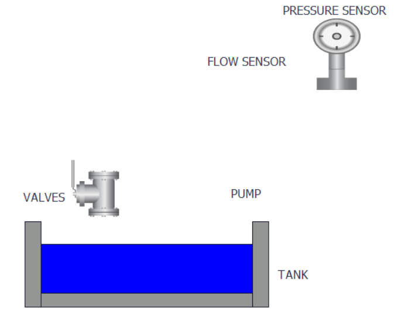

×
Username
Password
Login
Remember me
Cancel
Forgot
password?
Login
Logout
Home
Control
L
Dashboard
Alarm
Trend
WEBSITE GIÁM SÁT
Ổn định áp suất
GIỚI THIỆU

STATUS SYSTEM
RUN :
STOP :
ERROR :
CONTROL MODE
MAN
AUTO
PID Parameters
SetPoint:
PID Gain:
PID Ti:
PID Td:
LƯU
SỬA
Manual Control
START
STOP
Frequency:
LƯU
SỬA
OutPut
PV Pressure:
Freq Hz:
Search
From:
To:
Search
Export
DashBoard
Date
SetPoint
PID Freq Hz
PV Pressure
PID Gain
PID Ti
PID Td
Search
From:
To:
Search
Alarm
DateTime
Event
Class
PID Parameters
SetPoint:
PID Gain:
PID Ti:
PID Td:
OutPut
PV Pressure:
Freq Hz:
Goodbye!
Thank you for visiting.